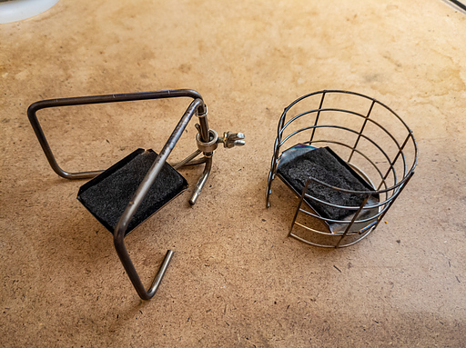
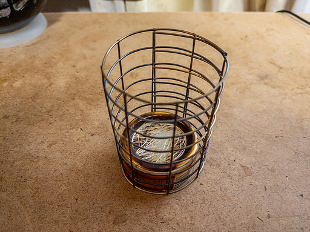
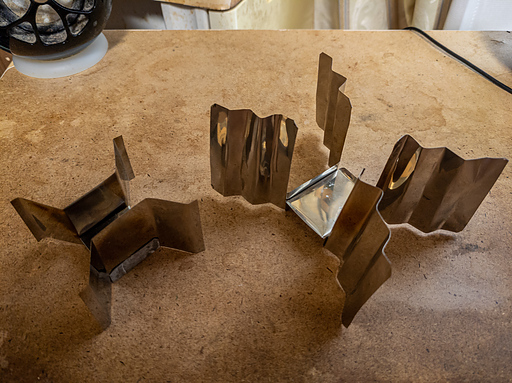

まずは T's Stove さんの固形燃料ストーブを参考にしようと考えた。

シンプルに T's Stove さんの Welded Wire 五徳にエナジードリンクの底をひっくり返したものをテスト。

缶の底をひっくり返した火床はエスビットに対しては通気性が悪く、エスビットが不完全燃焼を起こすので不採用となった。
ホームセンターでステンレス板を購入し、五徳とストーブが一体化したものを試作。ステンレスの切り出しと組み立てが思いの外大変だった。

結果は水が入った 450ml の Snow Peak シングルマグの重さに耐えれないことがわかって、これも却下となった。